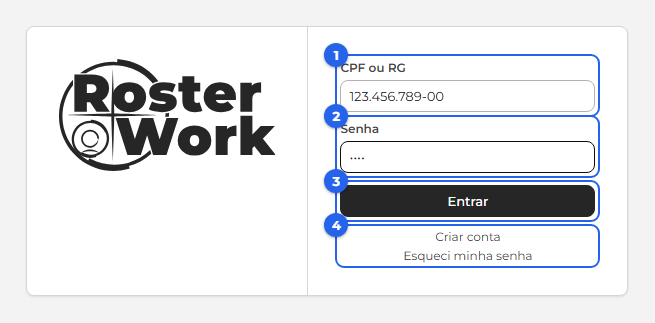
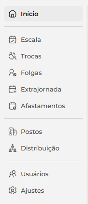
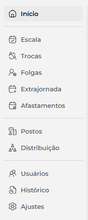
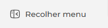
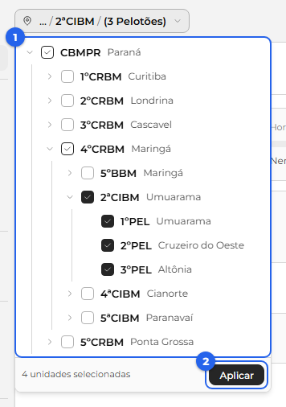
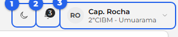
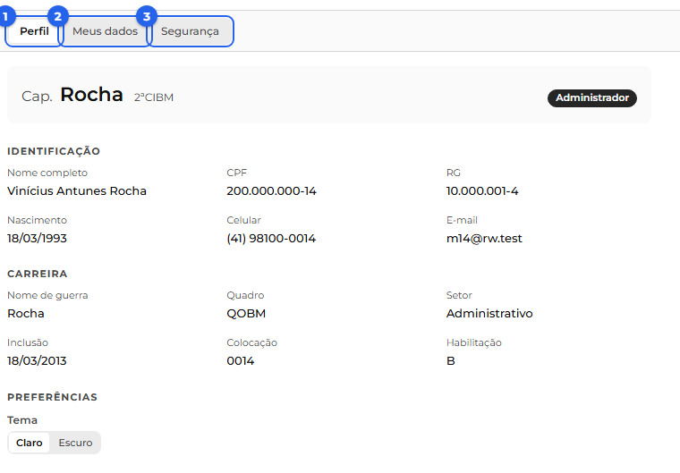
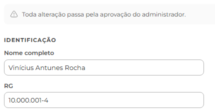
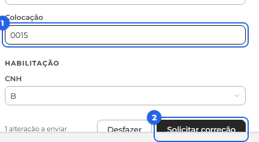
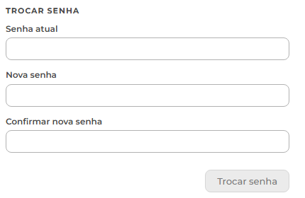

O Roster Work é o sistema de escala de serviço da corporação. Esta visão geral mostra, de cima, como as peças se encaixam; o detalhe de cada uma fica na sua seção.
Para cada dia, a escala responde a quatro coisas: quem trabalha, quando (o horário), onde (o posto) e em que função. O sistema separa isso em duas perguntas:
1) Quem está de serviço (o ciclo). Cada unidade tem um ritmo, por exemplo 24/48 (trabalha 24 horas e folga 48). Os militares rodam nesse ritmo, então a cada dia o sistema já sabe quem está de serviço. O ritmo é da unidade (fica em Ajustes), não é escolhido dia a dia.
2) Onde cada um fica (a distribuição). Sabendo quem está de serviço, o sistema coloca cada militar no seu lugar: em qual posto ou viatura e em qual função.
Primeiro o sistema sabe quem está de serviço, depois coloca cada um no seu lugar.
Depois da escala automática pronta, quatro coisas mexem nela por cima:
Para o sistema montar a escala sozinho, três coisas precisam estar prontas antes:
O administrador também é um militar: faz as próprias solicitações como usuário e aprova como administrador, sem trocar de modo. Só não aprova o próprio pedido.
Para usar o Roster Work, cada militar entra com o seu documento e a sua senha.

Se algo estiver errado, o aviso aparece abaixo do campo: "Usuário não encontrado" quando o documento não está no sistema, ou "Senha incorreta" quando a senha não confere.
Já entrou antes? Enquanto a sua sessão estiver ativa, o sistema abre direto na tela inicial, sem pedir o login de novo.
Depois de entrar, o sistema mostra sempre a mesma moldura em volta: o menu à esquerda, o cabeçalho no topo e a área de conteúdo no meio, que muda conforme a tela que você abre.
Menu (à esquerda). Lista as áreas do sistema. Clique numa para abri-la, e a área aberta fica destacada.


No pé do menu, o botão "Recolher menu" encolhe a barra para sobrar espaço. Recolhida, aparece só o ícone, e o nome surge ao passar o mouse. Essa escolha fica salva para os próximos logins.

Além das áreas comuns, o administrador tem o Histórico (auditoria). As áreas de gestão (Postos, Distribuição, Usuários e Ajustes) o usuário comum também abre, mas só para consulta; as ações de administrador ficam escondidas para ele. O item Programador aparece só para a equipe de programação.
Seletor de unidades (ao lado do logo). É ele que decide quais unidades aparecem nas telas (Escala, Usuários e outras). Clique para abrir a árvore, marque as unidades que quer ver (1) e clique em Aplicar (2).

Começa na sua lotação. Quem é do comando vê a companhia e os pelotões; quem é de um pelotão vê a companhia e o próprio pelotão. A escolha vale só naquela sessão: no próximo login, volta ao padrão.
O canto direito do cabeçalho. Reúne três atalhos:

É a sua página pessoal. Abre pelo menu do canto (seu nome) em "Meu perfil", e tem três abas: Perfil, Meus dados e Segurança.

Perfil (1). Mostra o seu cartão de identificação (grau, nome de guerra, lotação e o papel, Usuário ou Administrador) e os seus dados em leitura, separados em Identificação e Carreira. No fim, em Preferências, você troca o Tema, claro ou escuro, que muda na hora.
Meus dados (2). É onde você pede uma correção nos seus dados. Um aviso no topo lembra a regra: toda alteração passa pela aprovação do administrador.

Altere os campos que precisar. O campo mexido fica destacado e aparece um contador ("1 alteração a enviar"). Depois, clique em Solicitar correção para enviar tudo num pedido só, ou em Desfazer para voltar ao que estava.

Como funciona a aprovação: você só solicita; o pedido fica pendente até um administrador aprovar. Vale para todos os dados, inclusive celular, email e CNH. Abaixo do formulário, em "Minhas solicitações", você acompanha cada pedido pelo status: Pendente, Aprovada ou Recusada. O CPF não entra (é o seu login), e grau e lotação também não (mudam só por promoção ou transferência).
Segurança (3). Aqui você troca a sua senha: digite a senha atual, a nova (ao menos 6 caracteres e diferente da atual) e confirme. A senha muda na hora, sem precisar de aprovação.

Em construção.
Em construção.
Em construção.
Em construção.
Em construção.
Você precisa ser administrador para as ações desta parte.
Em construção.
Em construção.
Em construção.
Em construção.
Você precisa ser administrador para as ações desta parte.
Em construção.
Em construção.
Em construção.
Em construção.
Em construção.
Em construção.
Em construção.
Em construção. As regras que o sistema aplica sozinho: Chefe de Socorro e Oficial de Área (mais antigos), CNH do condutor, acúmulos e antiguidade.